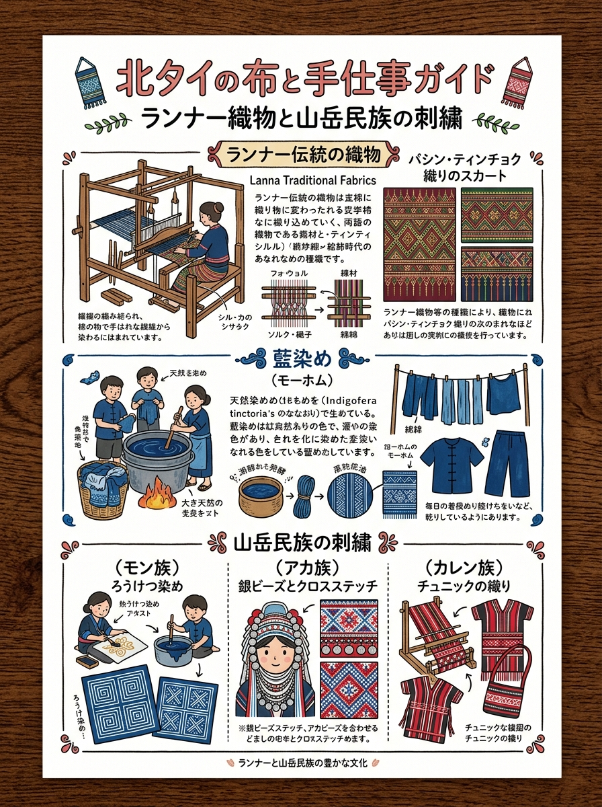
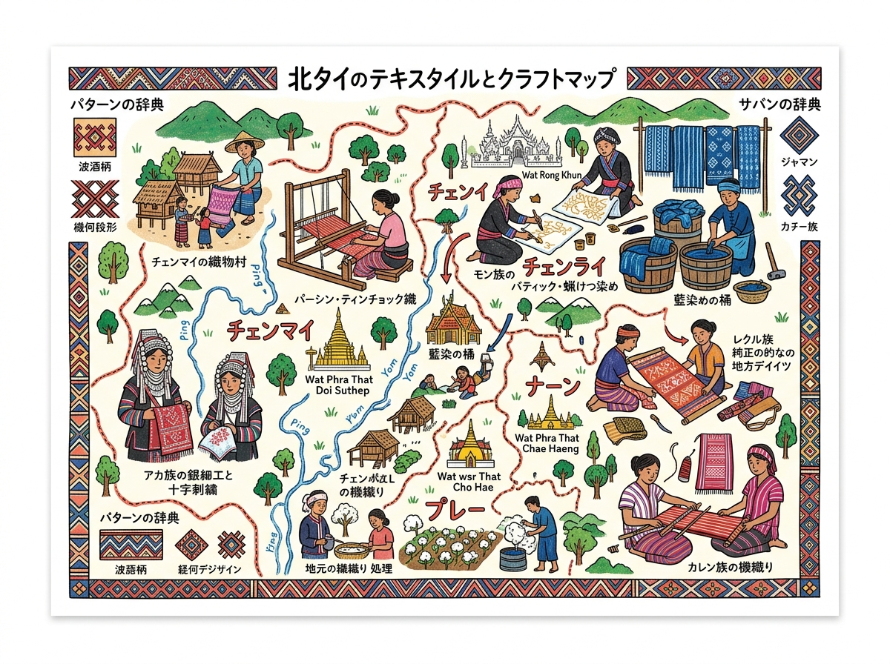

01
パー・シン・ティン・チョック（メーチェム裾織りスカート）
コム（天灯・光明）、サパオ（精霊舟・魂を極楽へ運ぶ船）、カン（供物台）など16定形文様。死装束（天国へのパスポート）の信仰。
ヤマアラシの針や指先で緯糸をすくい織る「チョック技法」。織物の裏面を上にして織るため表面が緻密。黄色と赤の鮮やかな配色が特徴。
パーサシン（巻きスカート）の織り柄、民族ごとの刺繍模様の意味と見分け方。
クリックすると拡大して詳細を確認・印刷できます。

旅行者の持ち歩き・印刷に適した手書き風インフォグラフィック。

位置関係やルート、全体像を俯瞰できるワイドデザイン。
現地調査および公的データに基づく最新詳細情報。
コム（天灯・光明）、サパオ（精霊舟・魂を極楽へ運ぶ船）、カン（供物台）など16定形文様。死装束（天国へのパスポート）の信仰。
ヤマアラシの針や指先で緯糸をすくい織る「チョック技法」。織物の裏面を上にして織るため表面が緻密。黄色と赤の鮮やかな配色が特徴。
伝統無地（勤労と素朴さの象徴）。現代は絞り染め・蝋結による流水紋や雲紋を展開。防虫・消臭・UVカット効果。
山間に自生するホム草（Strobilanthes cusia）の生葉を甕（モー）で発酵・木灰汁で還元させた天然インディゴ建染め。深みのある濃紺（藍色）。
ラーイ・ナムライ（流水紋）。ナーン川やメコン川の波頭・渦潮を象徴し、水がもたらす農耕の豊穣と生命の連続性を祈願。
シャトルを通さず区画ごとに異なる色糸を指先で掛け・潜らせる「ゴ・ルアン（綴織）技法」。継ぎ目なく波打つ鋭角的な段差グラデーション。
カ・トゥア・トゥー（螺旋・カタツムリ紋）＝聖なる巻貝・天体運行・魂の輪廻転生を象徴。八角星紋・蜘蛛の巣紋（魔除け・一族結束）。
ヘンプ（大麻布）に真鍮製ペンで溶かした蜜蝋で幾何学線を描き藍染め。布を重ねて切り抜くリバースアップリケ（ジェー）と鮮烈なネオン色刺繍。
ロムジウ（猫の足跡紋＝魔除け）、ソム（人間紋＝始祖神・盤王への祖先崇拝）、ヤーンピアン（銀花紋＝富と婚姻の吉祥）。
布の裏側を手前に向け、織り目を指先の感覚で数えながら裏から針を通す「裏刺し技法」。表裏ともに糸の結び目がなく均一で完璧なクロスステッチ。
白無地の長丈貫頭衣「チェワ」＝未婚女性の純真無垢・精神的清浄。既婚は上下分離（黒赤上着＋赤縞スカート）。タコーレー（小道・長寿）。
自らの腰にストラップを掛け体重で張力を調節する原始的な「腰機（バックストラップ織機）」織り。野生ハトムギの実を天然ビーズとして縫着。
頭飾り（パチョー）の銀細工・子安貝・硬貨・羽毛＝悪霊を祓い富と多産・生命力を守護。サソリのハサミ・蝶の羽などの抽象幾何学。
濃紺の藍染め木綿に多色リボンを細密に縫い付けるアップリケ。インドシナ銀貨、アルミ管、子安貝、赤色獣毛房を重厚に組み合わせる立体装飾。
ラーイ・ドーク・ピクン（天界の花・ピクル花紋）。富貴、健康、吉祥、長寿をもたらす最高格の宮廷紋様。
紋綜絖を用いて経糸を引き上げ、金銀糸・色絹糸を挿入して文様をレリーフ（浮き彫り）状に織り出す「ヨック技法」。王女ダーラー・ラッサミーゆかりの最高級絹織物。